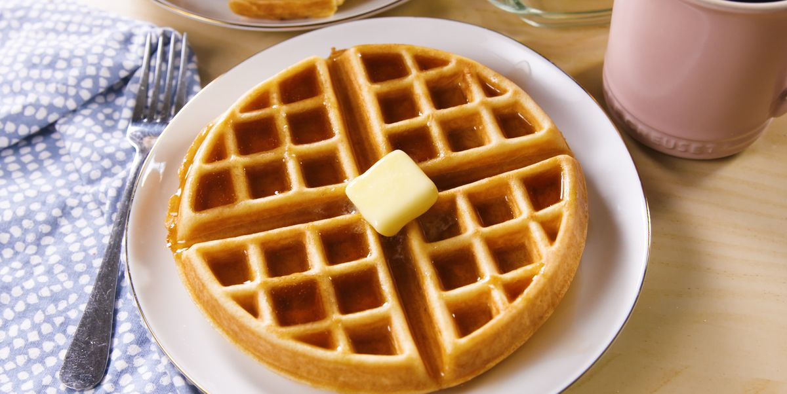

Classic Waffles

Nothing crazy, just some waffles.
Ingredients:
- 2 cups flour
- 1 teaspoon salt
- 4 teaspoons baking powder
- 2 tablespoons white sugar
- 2 eggs
- 1 1/2 cups milk
- 1/3 cup melted butter
- 1 teaspoon vanilla extract
Directions:
- In a large bowl, mix together flour, salt, baking powder and sugar; set aside. Preheat waffle iron to desired temperature.
- In a separate bowl, beat the eggs. Stir in the milk, butter and vanilla. Pour the milk mixture into the flour mixture; beat until blended.
- Ladle the batter into a preheated waffle iron.